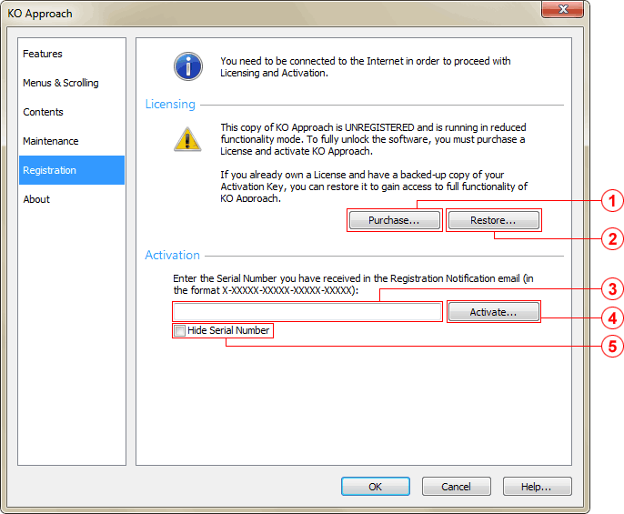

The Registration Tab appears differently in Registered and Unregistered installations of KO Approach.
Registered Mode

-
Registered User label
Displays the name of the User to whom the product is registered.
-
Backup button
Stores a copy of your Activation Key at a the specified location for quick recovery. This is useful for re-activating the program after rebuilding your hard drive or installing KO Approach fresh, as well as in situations when you cannot connect to the Internet.
Unregistered Mode
The Registration tab is the default for all unregistered installations of KO Approach.

-
Purchase... button
Opens your web browser and points it to the Order page. Follow the instructions on the web site to complete the purchasing process.
-
Restore... button
Allows you to locate and install an Activation Key previously issued for the current installation of KO Approach and saved on your hard drive.
-
Serial Number field
Enter the Serial Number you have received from the KO Approach Registration Service. This Number is critical for the Activation to succeed.
-
Activate... button
Contacts the Activation Service and submits the Serial Number you have entered for verification. Once the Serial Number has been verified, the server issues an Activation Key and installs it in your KO Approach application directory. If you encounter an Error message, please follow its instructions and try activating the product again. If the problem persists, please contact KO Approach Customer Support at support@ko-sw.com.
-
Hide Serial Number checkbox
Allows you to hide the Serial Number from others while completing the Activation process. Checking this box is optional; it only affects the appearance of the Serial Number on the screen and does not alter the actual value submitted to the Activation Service.